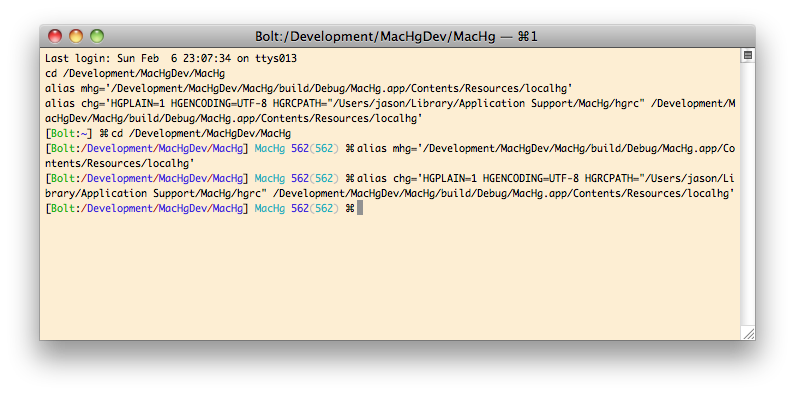

You can use the command line version of Mercurial (via the Terminal) interchangeably with MacHg. You can freely download and install whichever version of Mercurial you want on your machine and it will not conflict with MacHg since an independent copy of Mercurial is bundled inside the MacHg application. (In fact MacHg does this to ensure there are no conflicts or other problems with the users Mercurial configuration.)
Choose the menu item Repository > Open Terminal Here, or
Choose the toolbar item "Terminal", or
Choose the contextual menu item Open Terminal Here in the Browser View
This will produce something like the following:

Note in the terminal session you can see the aliases mhg and chg are being set up. These aliases point to the version of Mercurial inside MacHg.
Using mhg you can call mercurial just like you would normally use hg if you had (or have) installed the Mercurial tool.
mhg references the Mercurial binaries inside the MacHg application.Using chg you can call Mercurial in exactly the same way that MacHg calls Mercurial. That is chg is just like mhg except it passes the same configuration settings that MacHg uses.
chg references the Mercurial binaries inside the MacHg application.chg sets the HGPLAIN
environment variable.One would mainly use chg in order to ensure that if you run into problems with MacHg you are then able to experiment with the commands in the same way MacHg would issue the command. Eg for testing of connectivity, its important to ensure that non-interactive login is taking place and thus its important to call Mercurial in the same way that MacHg will issue the command.
If you want you can simply copy the alias command from the terminal and put it in your ~/.bashrc or ~/.aliases file. This makes the alias always available. The Mercurial binary lives inside the MacHg application, but it is a full and independent version of Mercurial and MacHg does not need to be running for the terminal to execute the Mercurial commands.